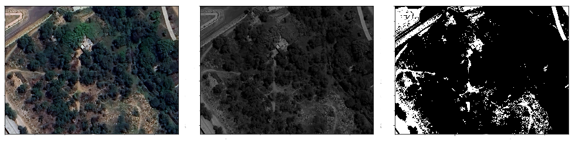

Efficient image processing
Upload aerial imagery and receive fast, visual analytical results in the browser.
Explore tree cover, enumerate trees, identify vegetation patterns, and assess environmental change from one focused workspace.

Upload aerial imagery and receive fast, visual analytical results in the browser.
Estimate green cover and distinguish vegetated areas from idle or developed land.
Combine mapping, enumeration, and historical climate views for clearer planning.